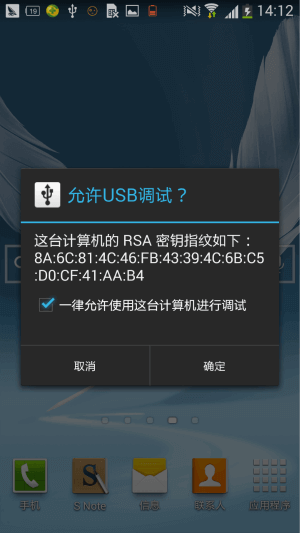
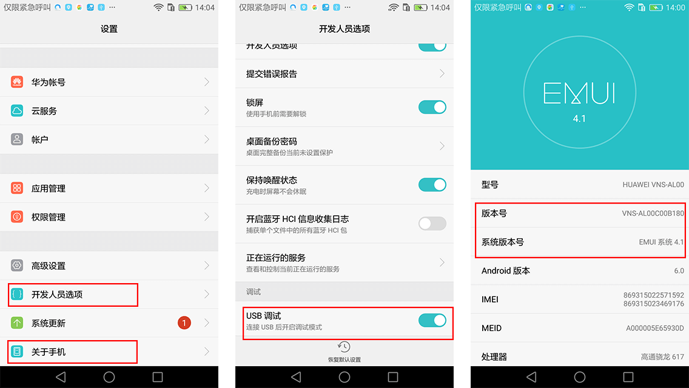
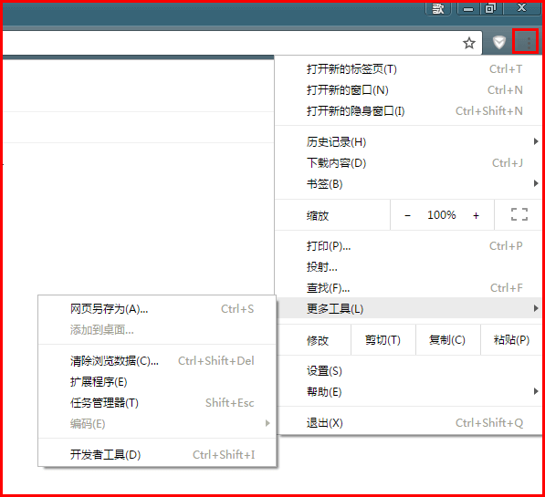
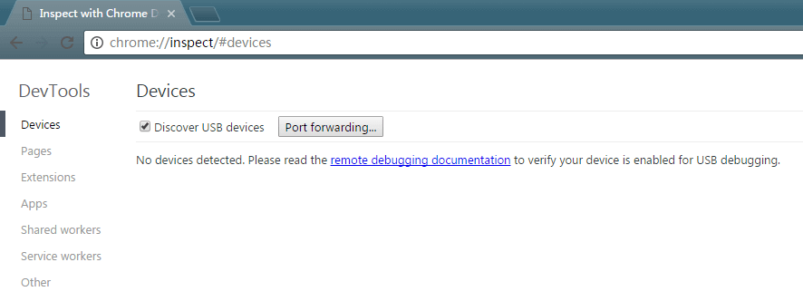
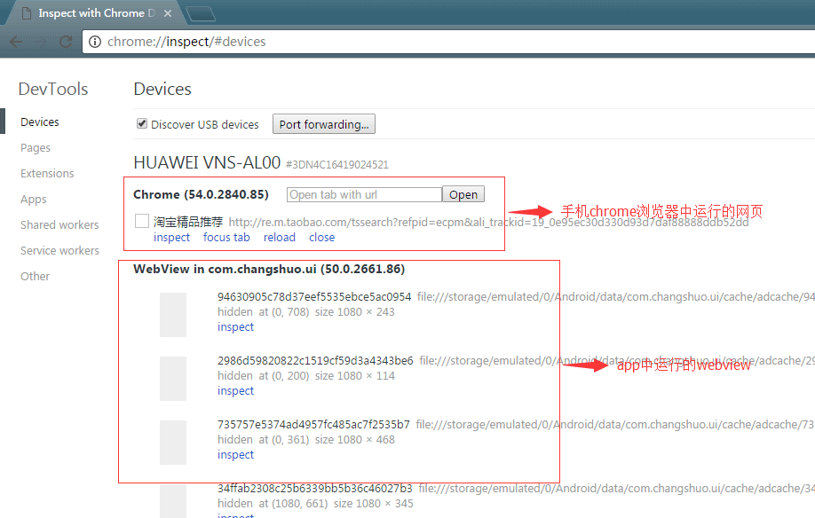
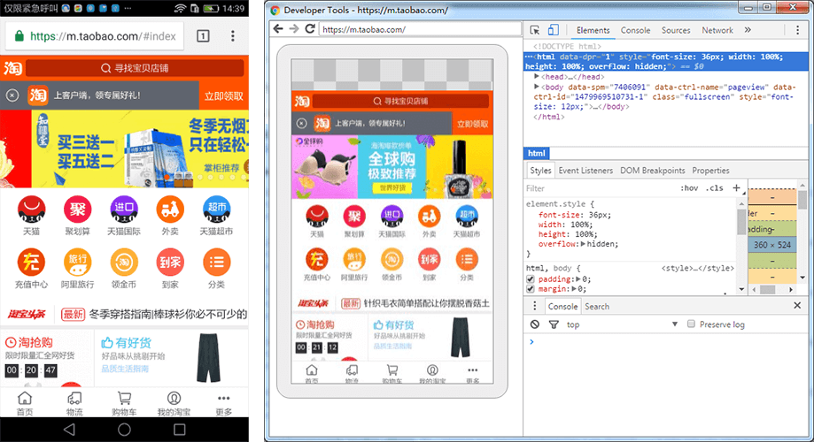
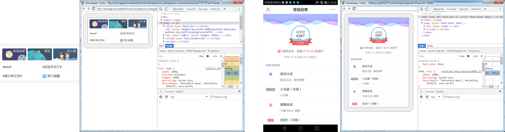

冷风吹过，又是一年末
北方寒风刮来的时候，惊奇的发现，又到年末了，但是回想不起来这一年做了什么，时间过得真的好快！
最近在浏览一个社区的时候，偶然发现了一篇文章，讲的是关于如何在移动端页面做调试的，内容中介绍了通过fiddler工具的一个插件来通过日志的方式进行调试，但是总感觉跟我在代码中弹个框这种低端调试方法差不多，所以就没往下实践，有兴趣的同学可以网上搜搜相关方法。做过移动端开发的都可能或多或少面临过如何在移动端调试的问题，目前大多数前端可能我一样，在pc端打开chrome浏览器控制台中的移动模拟选项，然后就开始在上面调试，基本上可以满足大部分正常的移动端网站的开发，但是在目前HybridApp(混合模式移动应用)流行的轻快下，如果还采用之前的方式，显然是不行的，因为这个时候我们需要跟app客户端的同学交流。所以前端小伙伴总是在寻找如何在app上也能像普通网页一样调试，在没找到之前，我用的是alert这种原始方式（想起了年少面试时悲惨的一幕），也确实解决之前遇到的好多问题，但是效率太低了，而且只适合逻辑的调试或者代码错误调试，比如样式之类的，就不用想了（之前样式的都是通过fiddler抓包文件，在本地修改，效率还行）。不过最近发现了一个非常不错的方法，那就是通过chrome remote工具来进行调试，满足了好多我们想要的功能，下面就做个简单介绍。
chrome remote是一个针对Android的远程调试工具，他能实现的部分功能如下：
- 调试移动端普通网站页面。
- 调试安卓App中的WebView页面
- 本地页面和移动设备页面实时同步
（ios系统上的调试，我目前没有试过，一般如果你有台mac一切都会的变得简单，而且ios系统上bug不是很多，而且都比较容易解决，但是android就不一样了，国内各种杂七杂八的android手机，bug贡献率那是蹭蹭的往上涨。）
调试环境如下：
- pc上安装一个chrome浏览器（目前随便下一个版本都在50多）
- 一台android设备）。
调试对象
如果是调试普通移动端网页，则需要在android设备上安装一个chrome浏览器，并且系统是4.0+（4.0+这个只是参考了其他文章这么说，自己没试过4.0-的设备是否可行）。
如果是调试app中webview页面，则需要4.4+系统（4.4—没试过），并且需要app在webview初始化的时候增加相应的配置，配置如下：
if (Build.VERSION.SDK_INT >=Build.VERSION_CODES.KITKAT) {
WebView.setWebContentsDebuggingEnabled(true); //最好是加上调试控制，例如只在测试版中开启此功能，防止正式版出现安全问题
}
上面的都准备好了之后就可以开始尝试了。首先将手机连接至pc，pc上最好安装一些什么手机应用管理之类的软件，例如腾讯的安全管家中自带的手机管理（随便什么相关的软件都行，主要是可以避免安装驱动之类的）。首次连接的时候会弹出：

勾选点确定即可，下次就不会再出现了(由于之前手机已经勾选了一致通过，所以又找了个)。然后，打开手机设置，先点击开发人员选项，将usb调试打开，然后返回上一层，点击关于手机，会出现手机的信息，多次点击版本号（有可能是系统版本号，不同手机表现不一致），会开启开发人员调试功能。具体如下图红框中所示：

手机端以上完成之后，打开pc Chrome浏览器，点击菜单————更多工具———— 检查设备，如图：

然后惊奇的发现米有检查设备选项，不要慌，此时在地址栏输入: chrome://inspect/#devices ,这样会看到如下图所示：

如果此时手机设备已和pc链接好之后，会出现设备相关信息以及你目前在手机设备中运行的网页，如图：

点击inspect按钮，会弹出一个窗口，对应的是此刻在手机上运行的页面，会看到和本地浏览器一样的界面，然后就可以进行调试了。下面一些是我在实际调试中的一些截图，仅做展示。
普通网页

webview页面

关于调试方式还有好多，很多厂子都有做各种调试工具，大家可根据个人喜好来选择自己喜欢的一种。另外，本文是一篇工具使用介绍类文章，参考了好多其他精华文章，所以，如有跟某篇文章相似的地方，还请见谅。